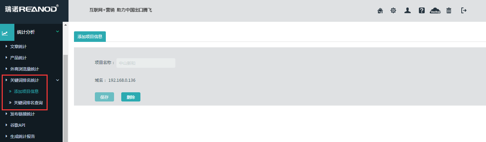
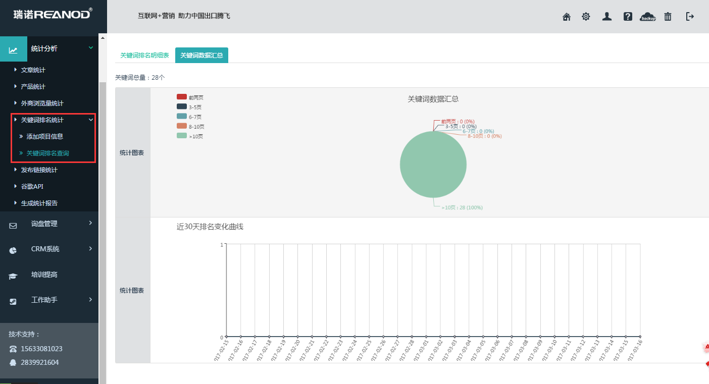

步骤一：添加项目信息，项目名称手动填写，域名是自动获取的，填写项目名称的作用是将项目添加到关键词总账户中，域名是自动获取的作用是保证每个项目的后台只能查询这一个项目的关键词。

步骤二：添加关键词
添加项目之后，去”关键词排名查询“页面，添加关键词，每行一个关键词。该页面其它功能是：批量删除，导出excel，排序方式是默认（添加关键词的顺序）和位置（按照排名位置升序排列）。
关键词数据汇总
饼图：前2页，3-5页，6-7页，8-10页，>10页占比
曲线图：前2页，3-5页近30天 关键词个数变化曲线
